Gone are the days when the only thing you can do on Instagram is to share photos and videos. Now you can even save photos privately using Instagram collections. No need for screenshots!
Instagram collections feature allows users to save photos and videos in a private album. This feature is so underrated. However, it’s a highly useful tool, especially for brands and influencers.
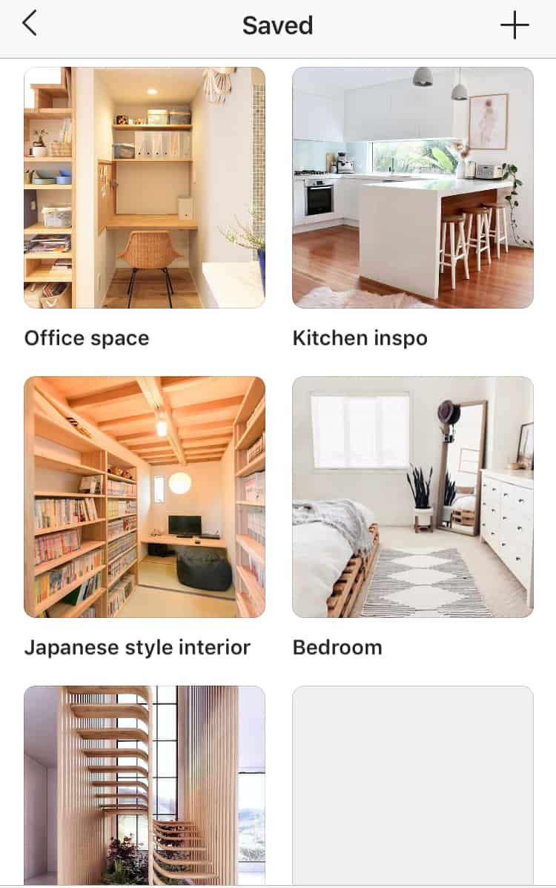
For instance, you can use it to collect user-generated content. Or use it to keep track of challenges and contests.
Want to learn more about how you can use Instagram collections?
In this post, you’ll learn how to add photos to collections. Plus a few great ways to use this feature!
But What Are Instagram Collections?
Instagram first introduced the “bookmark” feature last December 2016. A few months later, they added the Collections feature. This allowed users to group their saved content into different categories.
Think of it like a Pinterest board. However, Instagram collections are private. Meaning, you’re the only one who can see it.
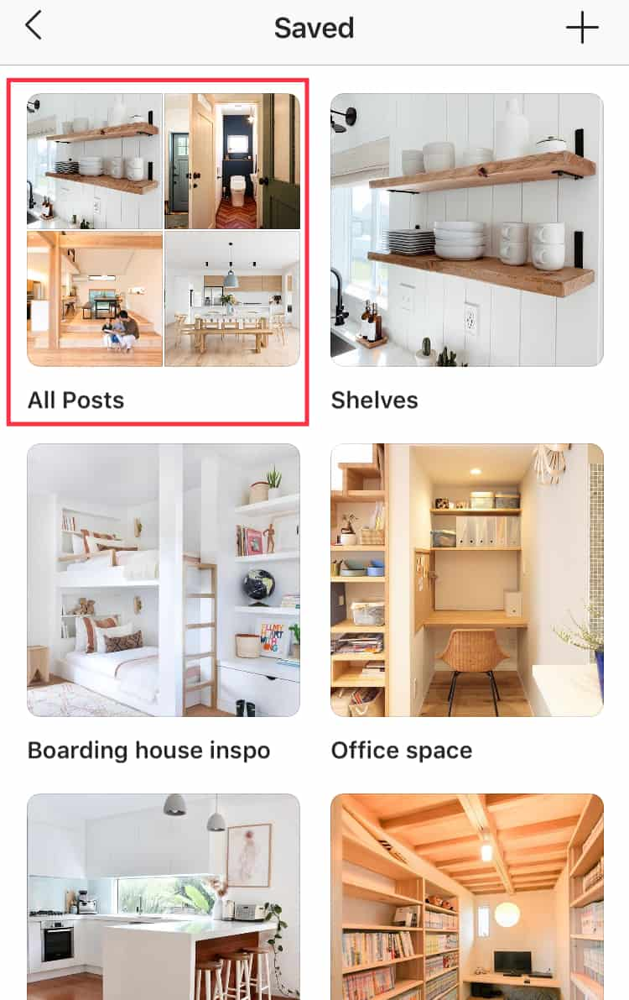
Can I See Who Saved My Content?
No, you can’t. It’s not like Instagram Stories where you can see who’s viewed your Stories.
However, Instagram Insights has a metric that shows the number of “saves” for each post. You can see how many people have saved your content. This is essential when determining the engagement rate.
Here’s how to access this information:
First of all, you need to switch to an Instagram business profile. Then go to your Instagram Insights feature.
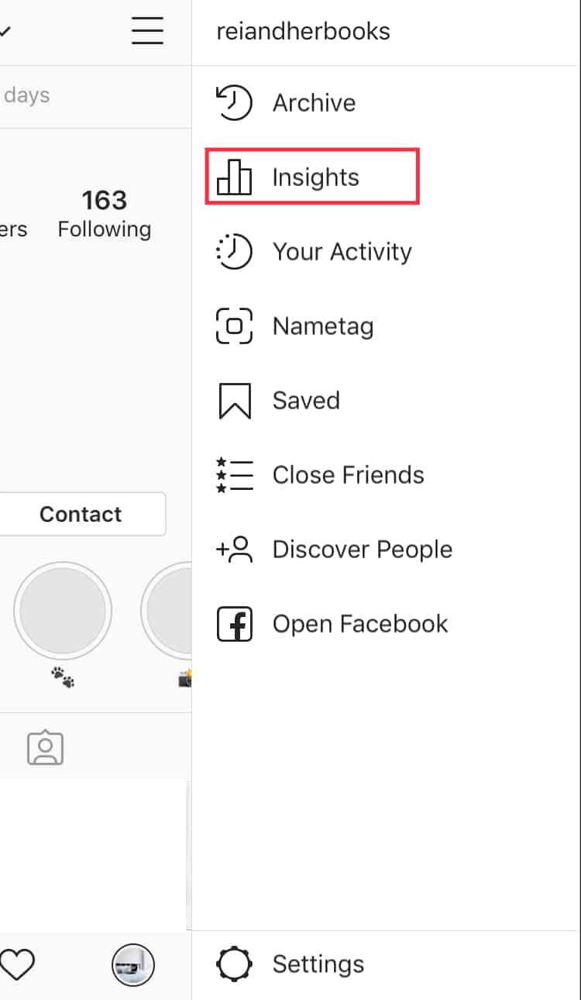
Under the Content tab, scroll down to Posts. Select “See all”.
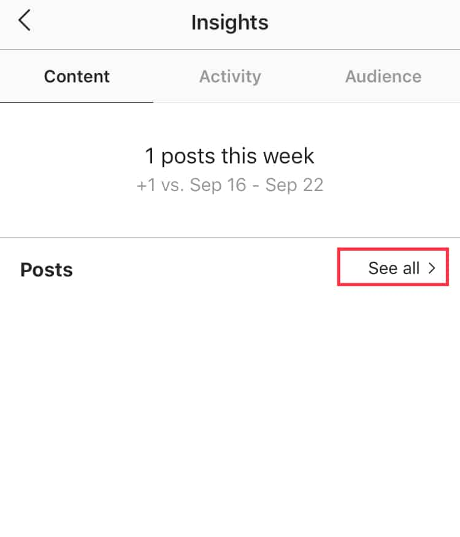
From here, tap the blue-colored text at the top of the screen.
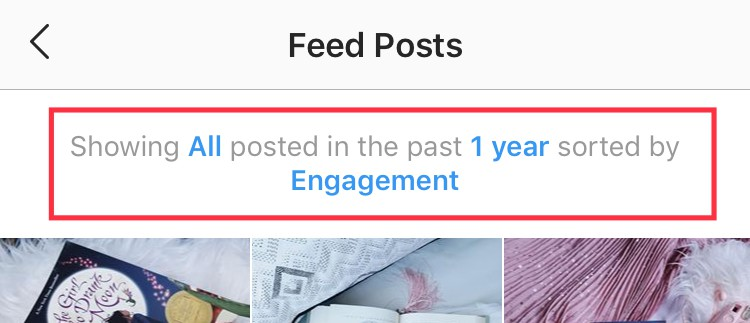
Adjust the filter until you get to “Saved”. When done, tap Apply.
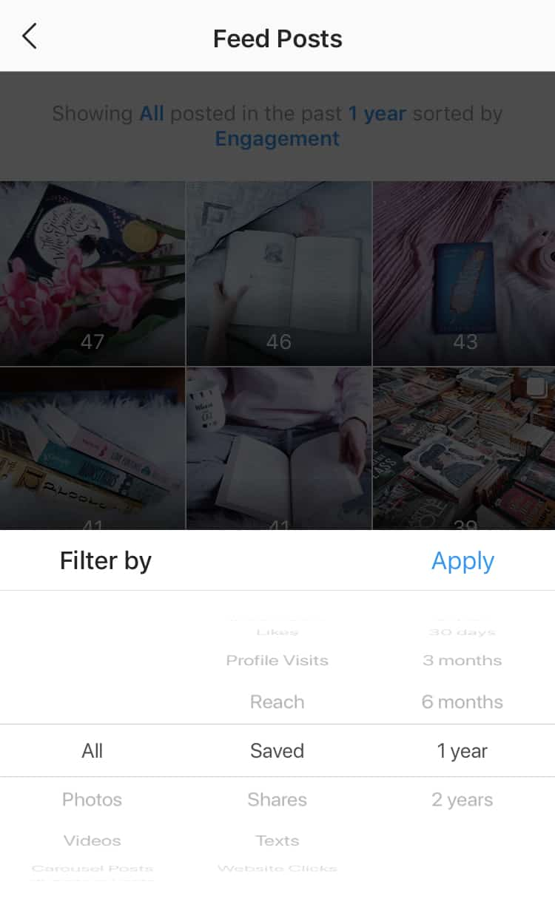
Remember, you can see how many times your content was saved. But not who saved them.
The Private Nature of Instagram Collections Is Appealing
No one will know what you’ve saved in your collections. Your followers can’t see the bookmark icon if they visit your profile.
This feature is great for brands to use as a way to keep track of the competition.
There are rumors that Instagram is testing the Collection’s public feature. However, they have denied such rumors. So we’ll have to wait and see. Until then, your Instagram collections remain private.
How To Create Instagram Collections
Go to your profile and tap the three horizontal lines.
From here, tap the bookmark icon.
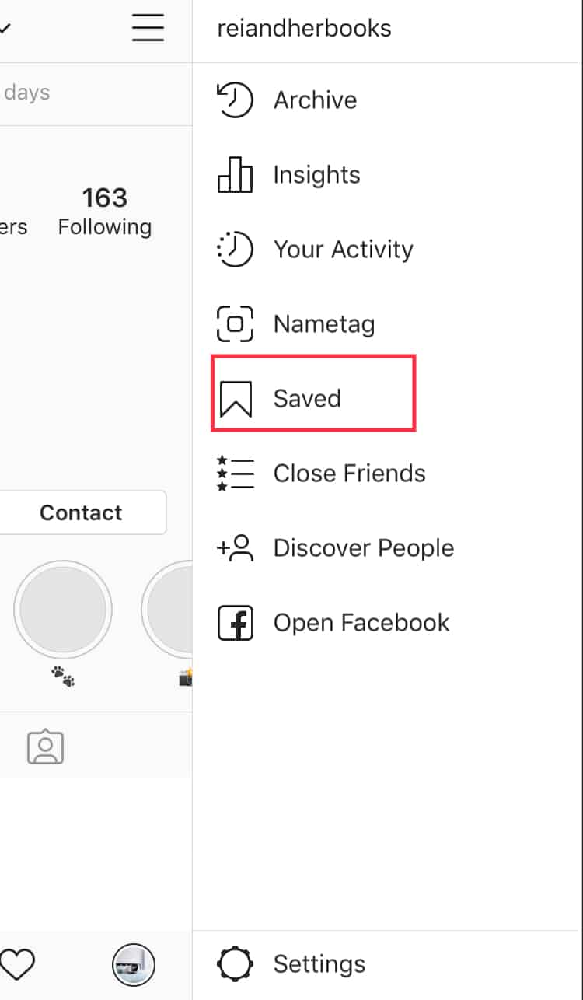
Tap + to create a new Collection.
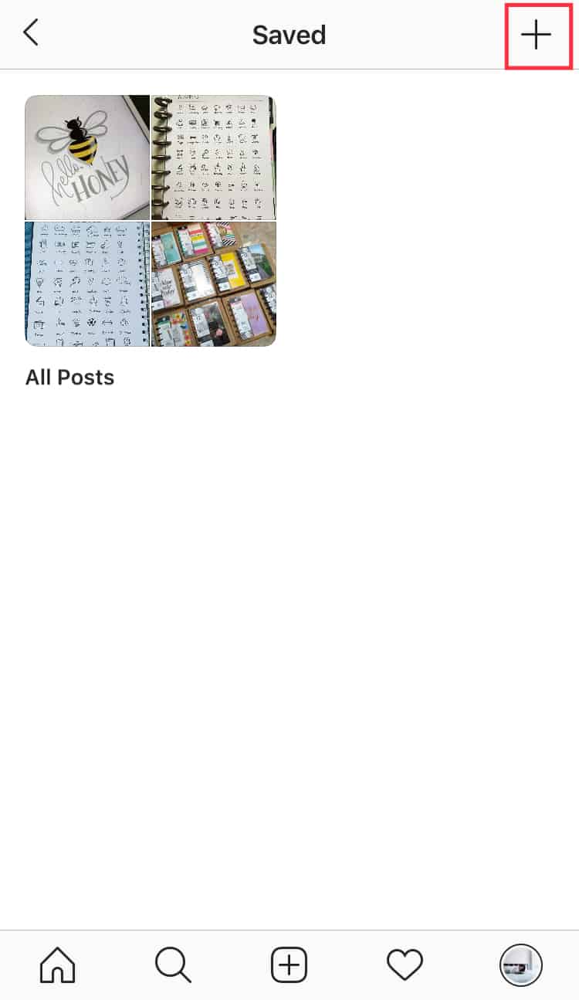
Enter a name for your collection. Then tap Next.
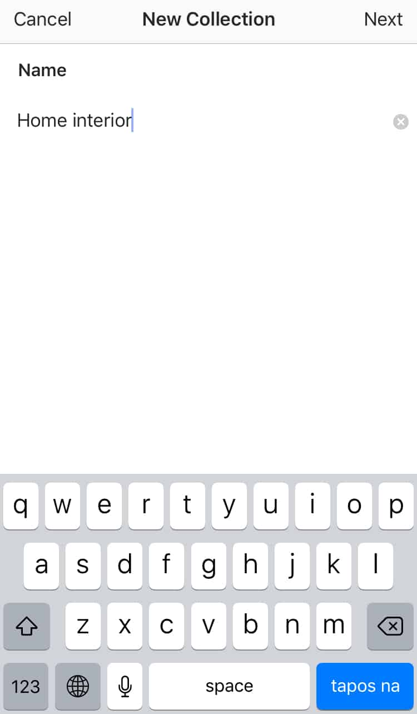
Select photos from your Saved content to add. Then tap Done.
Tip: If you don’t wish to select photos at the moment, you can simply tap Done. You’ll still have the option to “Add to Collection”.
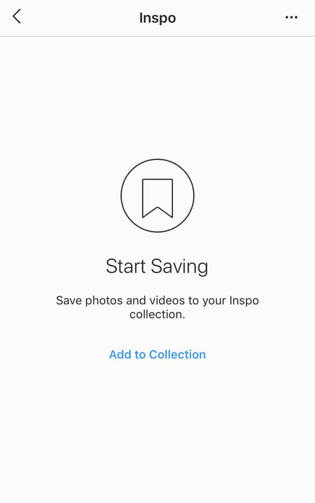
How To Create Instagram Collections As You Save Posts
You can also create new collections as you save photos or videos. To do so, simply tap the bookmark icon.
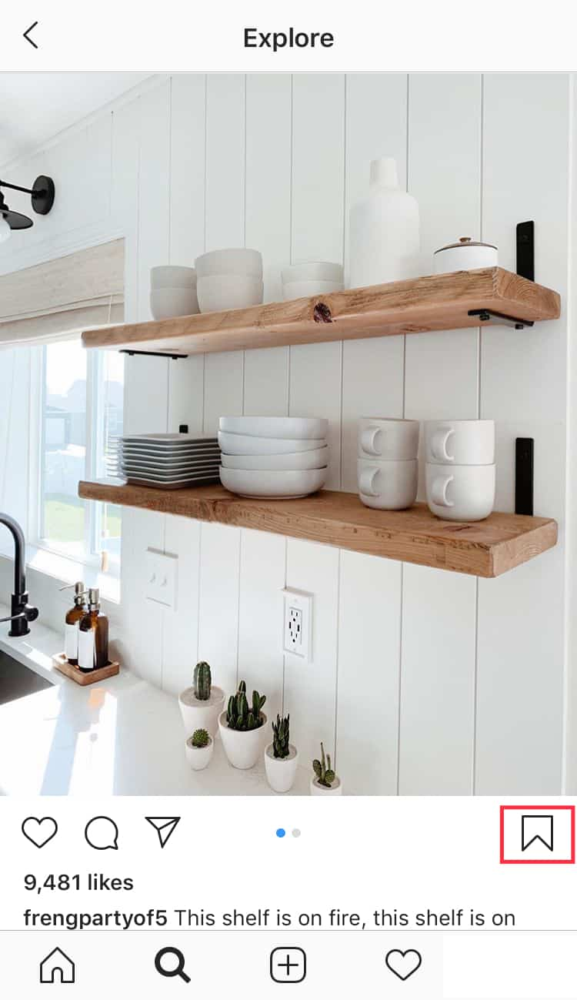When you do, a pop up will appear. Tap “Save To Collection”.
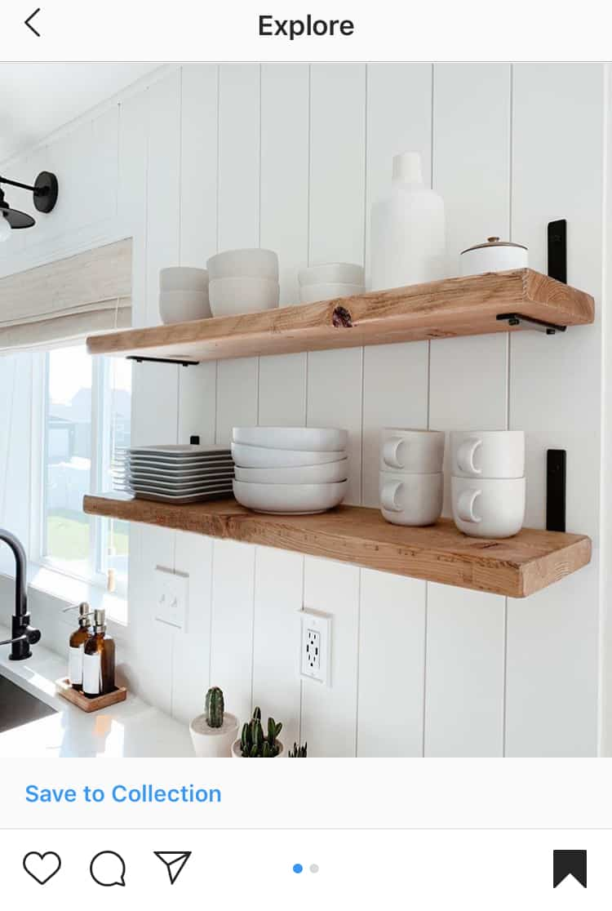
You can save the post to an existing Instagram collection. Or create a new one by tapping the + icon.
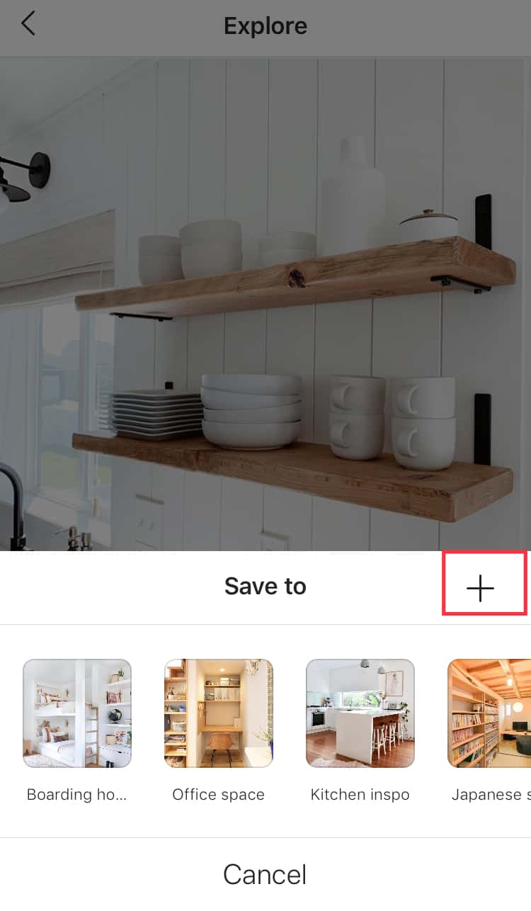
Add the name for the new collection. Tap Done.
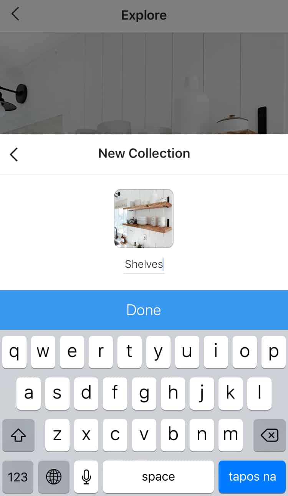
Note: When you save a photo or video without adding it to any of your Collection, it’ll be saved under “All Posts”.
How To Edit Your Collection
Select the Collection you want to edit.
Tap the three dots at the upper right corner.
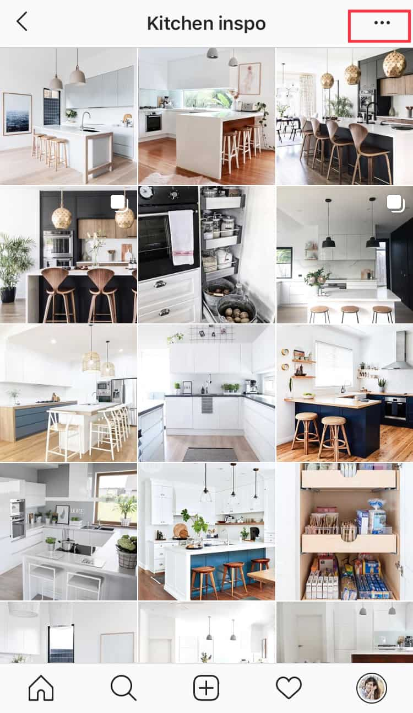
You have the option to delete, edit, or add to the Collection.
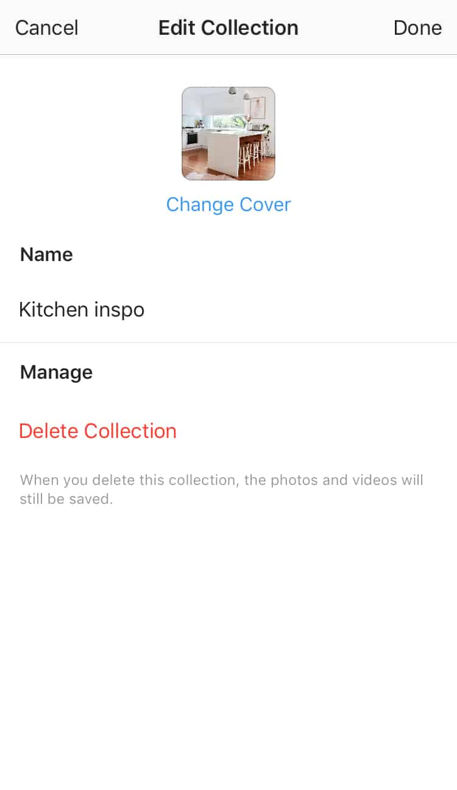
For example you want to edit the collection. Here, you can change the name or cover. You can also delete it.
Ready to use Instagram collections?
Ingenious Ways To Use Instagram Collections
Manage User-Generated Content
Did you know that 90% of consumers say that user-generated content influences their buying decision? This is according to a study by TurnTo Networks.
For this reason, it’s best to leverage UGC to build your brand. This type of content helps build trust and brand awareness. With Instagram Collections, sorting and organizing such content is made easy.
But What Are User-Generated Content?
User-generated content, or UGC, is a type of content made by users of a brand. It can either be a video, photo, testimonials, etc. With UGC, users are promoting the brand without getting paid.
Sharing UGC content has changed the marketing and shopping landscape. According to a study,
- 63% of consumers believe that UGC creates a more truthful shopping experience
- 73% of consumers say they are more confident with their purchase because of UGC
- 61% of them started engaging with brands
Take a look at @theouai. The haircare brand uses UGC to promote their products as well as curate their feed.
Credit: The Ouai via Instagram
How To Collect and Organize UGC
- Look at your brand mentions. Sort through them and select the content you want to use later. Simply save them in your Instagram Collections.
- Another option is to create a branded hashtag. Your fans and followers can use it when posting about your products or services.
Tip: Before adding these posts into your collections, you must first ask permission.
Credit: @maisontetonia via @airbnb Instagram
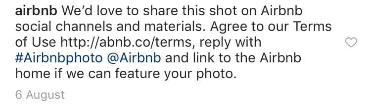
Once saved, you’ll have an inventory of UGC which you can use when scheduling content. These types of posts are also perfect for “filler” content.
Here’s an example from Airbnb. They share mostly user-generated content on their Instagram feed.
Credit: @lilypadpalmbeach via @airbnb Instagram
When re-posting, they make sure to credit the original creator.
Monitor Your Competition
Instagram has evolved into a marketing channel for businesses. And with so many brands and businesses on the platform, it’s crucial to monitor your competitors to stay relevant.
Additionally, it helps create an effective marketing strategy. Why?
You and your competitors have a similar target market. Therefore, taking a peek at their approach gives you an idea of how they’re reaching their audience. Additionally, use this strategy to learn from their mistakes.
Instagram Collections is a great feature for this strategy. Save posts to a collection for reference when creating your own marketing strategy.
Don’t worry! As previously mentioned, saved photos are private. Your competitors won’t know if you’ve saved one or a bunch of their content.
It’s an excellent strategy to keep an eye on your competitors.
How To Use Instagram Collections To Analyze Your Competition
For one, you can take a look at their content strategy.
- What type of content are they posting?
- How frequently do they post in a week?
- Which photo or video had the most engagement?
- How do they write their captions?
Secondly, save the content that catches your eye in your Collections. In doing so, you can easily see, organize, and analyze them to create a better content strategy.
Lastly, take a look at trending topics in your niche. Then look at how competitors craft their content to ride the trend. Determine what marketing strategies they’re using. Then save them to your collections to review later.
Here’s what you can do:
- Look at what your competitor is doing right
- Use their content as inspiration and come up with a unique content strategy
Brands must do a competitive analysis on the platform. Instagram collections is a great tool to get started. Gain new insights on what they’re doing to improve your own strategies.
Remember: Use Instagram collections to research competitors without spending a lot of money.
Build Customer Relationship
Today, businesses are recognizing the power of Instagram. With this platform, businesses not only reach their target audience but are also able to build relationships with them.
However, not all brands are doing so effectively. It’s crucial to engage with your audience. However, you can’t always stay on top of things. Especially when you’re juggling comments, DMs, and replies.
Here’s a tip: Use Instagram Collections to keep track of these engagements.
For instance, if an account mentions your brand with an inquiry, save it to a collection. In doing so, you can go back and respond at a later time.

Credit: @glossier via Instagram
This keeps your mentions in one place. Thus, you can easily monitor one-on-one engagement.
More importantly, when answering inquiries or addressing issues, it’s best to move the conversation to a private channel.
Here are a few circumstances:
- When you need to keep customer information private. Never ask for a customer’s email address or personal info in the comment section. Use Instagram DMs or email for a more private conversation.
- If the issue requires a longer conversation. It’s best to address it through email.
- When discussing a unique problem or circumstance. You don’t want to disturb or alert other customers. Therefore, address the issue in a one-on-one private message.
Instagram is not only great for reaching customers and driving sales. It’s also perfect for social media customer service.
Make use of Instagram collections to keep track of brand mentions and tags. In doing so, you won’t miss a single one!
Follow Influencers You Want To Work With
Influencer marketing has become a huge hit for brands. With this strategy, brands saw a boost in:
- Brand awareness
- Follower base
- Engagement
- Sales
For this reason, partnering with an influencer can help you rip a lot of benefits.
Say, for example, you’re a beauty brand. You’re looking into influencers and not sure who will best represent your brand. When considering who to work with, start by collecting content.
Use your saved photos to:
- Know whether or not they have an engaged audience
- Keep track of their posts
- See if their voice matches your brand identity
- Determine if they write a good Instagram copy
- Assess whether their personality is in line with your brand
- Brief your marketing team about the said influencer
Why should I save content from influencers to my Instagram collections?
- First of all, it helps you properly compare and evaluate your choices
- Secondly, you can keep track of your engagement with particular influencers
- Lastly, you can easily and quickly build rapport with chosen influencers.
Once you’ve made a decision, reach out to them. Make sure to offer a good deal.
Additionally, when your partner influencer tags your brand in an Instagram post, you can then save it to a collection. Post it as a UGC later.
Find Inspiration
Of course, brands need to be unique. However, it’s also natural to seek inspiration from others. It helps keep your creative juice flowing.
Remember, find inspiration. Never duplicate!
For this strategy, you can use Instagram collections to save content that inspires you. Think of it as a digital mood board.
This feature is especially useful when you’re deciding on your brand aesthetic.
Is there a color scheme you like? Say, for example, you want a minimalist theme with whites and earth tones. Then dedicate an Instagram collection for it.
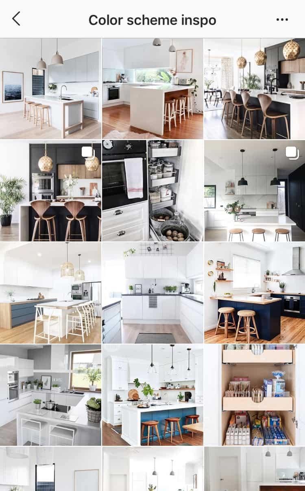
Another option is to use collections for saving Instagram quotes. For instance, if you find a quote that inspired you, you can save it on your “Quotes” collection.
As a tip, it’s best to first ask permission if you can repost the “quote” post. Then you can save it for later use.
Keep Track Of Challenges or Contests
For example, you participated in a contest. To keep track of its progress, save it to a collection. When the contest ends, you can easily go back to that particular post to see who won.
Another example is when you’re participating in challenges. Say, for example, a book photo challenge. Save the post into a collection so you won’t have to keep scrolling through your camera roll.
Can Instagram Collections Be Sorted?
Unfortunately, users don’t have the option to sort their collections. At the moment, the most recently created Collection is shown first.
This is a bit of a catch for those with a large number of collections. But who knows? Maybe in the coming updates, Instagram might add this feature!
In Conclusion
Instagram made it easy to save photos and videos you like. You can even save them into Instagram collections for better sorting and organizing.
Creating Instagram collections is super easy. Plus it also comes in handy for a lot of purposes – from sorting user-generated content to doing competitive analysis.
What we’ve listed above are just some of the great ways to use Collections. The possibilities are endless!


1 Comment